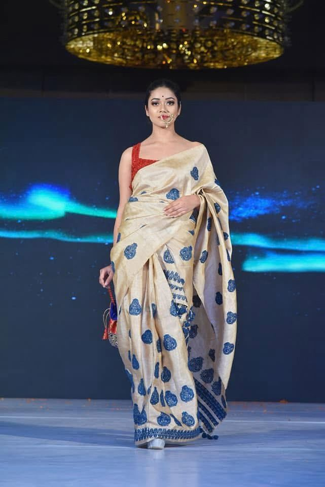
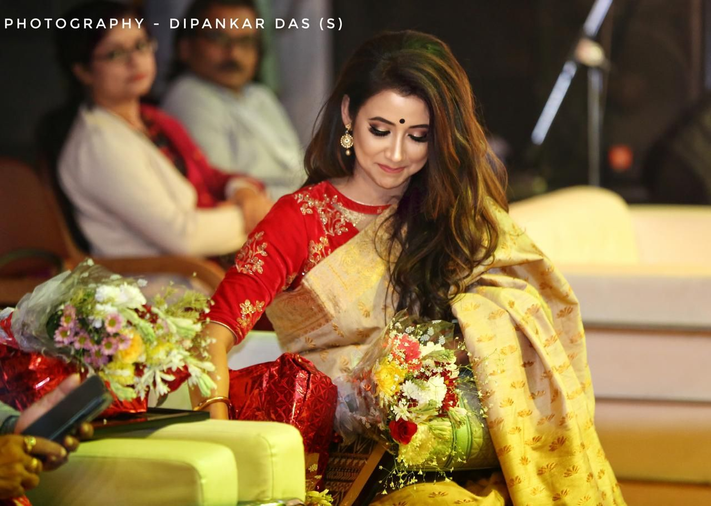
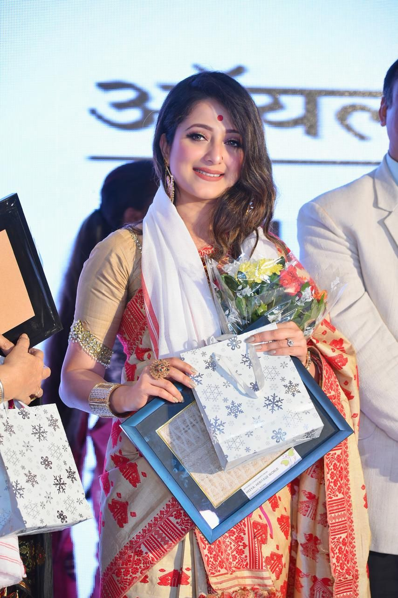

Mitali Baruah Bora
Journalist turned textile entrepreneur. She founded Heeya and Heeya Heritage World, and she organises shows and craft projects with the Government of Assam and the Ministry of Textiles.
Heeya means হিয়া, the heart, in Assamese. The studio began with one woman’s devotion to the textiles she grew up with. It is now a mother and daughter, working with Assam’s artisans to carry that craft forward.
Mitali Baruah Bora is an entrepreneur and cultural advocate dedicated to preserving Assam’s rich textile heritage. She is the founder of Heeya — The Attire Studio and of Heeya Heritage World, an NGO committed to traditional craftsmanship and women’s empowerment.
With a background in English Literature, Communication and Journalism, she began her career with The Indian Express and All India Radio before turning to her passion for textiles. She has organised fashion shows and taken on projects under State and Central Government initiatives, working with the Directorate of Handloom and Textiles, Government of Assam, and the Office of the Development Commissioner (Handicrafts), Ministry of Textiles, Government of India.
A grounding in English Literature, Communication and Journalism.
Her early career in print journalism and on All India Radio.
A studio for mekhela sadors and handloom in Assam’s finest silks.
An NGO for traditional craftsmanship and women’s empowerment.
Journalist turned textile entrepreneur. She founded Heeya and Heeya Heritage World, and she organises shows and craft projects with the Government of Assam and the Ministry of Textiles.

Mallika brings a fresh, innovative perspective to the design of the mekhela sador, carrying Assam’s textile traditions into a new generation’s wardrobe.
Through Heeya Heritage World, our NGO, we support traditional craftsmanship and the women who carry it, so the looms of Assam keep weaving for generations to come.
Moments from the fashion shows we have organised and joined across Assam.






Visit us at Rajgarh Road, Guwahati, or message the studio on WhatsApp and we’ll help you find your mekhela sador.